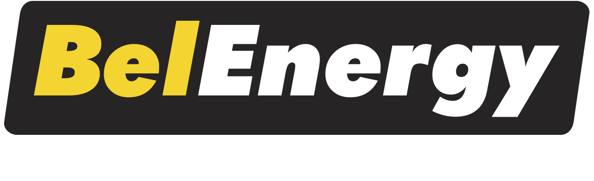

Economia que faz sentido
Tudo começa no consumo real. Assim a proposta fica mais honesta, mais clara e mais fácil de entender.
Connect Curitiba ao lado de marcas que ajudam o cliente a decidir com mais confiança.
Com base em Curitiba, atendemos o Paraná e Santa Catarina com um atendimento apoiado por parceiros fortes em tecnologia, integração, distribuição e suporte.


CuritibaAtendimento próximo, leitura técnica e acompanhamento do primeiro contato ao pós-venda.

A gente atende o Paraná e Santa Catarina a partir de Curitiba, com leitura técnica, marcas confiáveis e uma conversa objetiva desde a análise da conta até o pós-venda.
No fim, o cliente não está escolhendo só equipamento. Está escolhendo segurança para investir bem.
Mais do que vender energia solar, nosso papel é ajudar o cliente a entender o que realmente faz sentido para o seu caso. É isso que traz confiança desde o primeiro contato.
Tudo começa no consumo real. Assim a proposta fica mais honesta, mais clara e mais fácil de entender.
Por trás do atendimento, existe processo, engenharia e uma rede que ajuda a sustentar cada etapa.
Fornecedores fortes ajudam a entregar mais segurança, melhor suporte e boa disponibilidade.
A instalação não encerra a conversa. O cliente continua tendo canal, acompanhamento e orientação.
Nossa unidade opera a partir de Curitiba, mas atende clientes em diferentes cidades do Paraná e de Santa Catarina. Isso permite estar perto do cliente sem abrir mão de processo, engenharia e acompanhamento.
Com base em Curitiba, a gente atende o PR e SC com agilidade, conversa objetiva e proposta bem explicada.
O projeto nasce da leitura correta do consumo, da área disponível e do retorno esperado.
Documentação, concessionária e execução fazem parte de um fluxo acompanhado, sem o cliente ficar perdido.
Depois da entrega, o cliente segue com canal aberto para orientação e acompanhamento.
Fornecedor não entra só para compor proposta. Ele entra para dar desempenho, suporte, disponibilidade e coerência técnica ao que está sendo entregue.
A escolha dos componentes não é automática. Ela depende do perfil de consumo, do objetivo do cliente e da solução que faz mais sentido para cada caso.
Marca global reconhecida em energia e armazenamento. Traz robustez e visão de longo prazo para o projeto.
Uma das marcas mais respeitadas do setor elétrico brasileiro. Soma confiança, integração e assistência.
Distribuição especializada em solar, com portfólio amplo e boa capacidade de composição técnica.
Marca brasileira com linha solar e soluções elétricas que ajudam na proteção e na montagem do sistema.
Sobre Tier 1 BloombergNEF: esse critério vale para fabricantes de módulos fotovoltaicos, e não para todos os fornecedores do projeto. Nos demais casos, o que mais pesa é marca, garantia, suporte, disponibilidade e encaixe técnico.
Cada cliente olha para a energia solar por um motivo. Por isso, a proposta precisa conversar com a rotina, o consumo e o objetivo de quem vai investir.
Mais economia no mês, proteção contra reajustes e valorização do imóvel com baixa manutenção.
Mais previsibilidade no custo de operação para lojas, clínicas, escritórios, mercados e empresas de serviço.
Projetos para propriedades que dependem de energia constante em bombeamento, refrigeração, irrigação e rotina produtiva.
Projetos com foco em escala, melhor leitura do investimento e redução do peso da energia na operação.
Do nosso lado existe método. Do lado do cliente, precisa existir clareza. É isso que faz a decisão avançar com segurança.
A gente começa entendendo consumo, tarifa e potencial de economia.
Montamos uma proposta técnica e financeira que faça sentido para o seu caso.
Seguimos com a instalação e o processo junto à concessionária.
Depois da entrega, você continua com suporte para acompanhar o sistema.
Atendemos a partir de Curitiba, com olhar local e operação preparada para diferentes perfis de cliente no Paraná e em Santa Catarina.
Sim. Em muitos casos, a economia é significativa. O número exato depende da conta atual, da tarifa, da área disponível e do sistema escolhido.
Na maior parte dos casos, o retorno acontece entre 3 e 5 anos, mas isso varia conforme consumo, investimento e configuração do sistema.
É uma referência de mercado usada para fabricantes de módulos fotovoltaicos com boa aceitação em projetos financiados. É um sinal importante, mas não substitui a análise técnica do projeto nem vale da mesma forma para todos os fornecedores.
Não. Atendemos casas, empresas, pequenas indústrias, condomínios e propriedades rurais.
Sim. Existem linhas de financiamento no mercado, e a melhor opção depende do perfil do cliente e do tamanho do projeto.
Não costuma ser alta. O essencial é acompanhar o desempenho do sistema e seguir a orientação de limpeza e inspeção quando necessário.
No blog, você encontra artigos sobre economia de energia, retorno do investimento e como funciona a energia solar na prática — para chegar à proposta com mais clareza.
Entenda como calcular a economia real, quais fatores influenciam e o que esperar do projeto.
Consumo local, perfil de uso, retorno esperado e particularidades de cada região.
Um guia claro sobre o processo de implantação, da proposta até o sistema funcionando.
Se quiser, envie sua conta de energia. A partir dela, a gente faz uma leitura inicial e mostra os próximos passos com clareza.
Base em Curitiba, com atendimento em todo o Paraná e em Santa Catarina.
Curitiba/PR | Paraná e Santa Catarina
Residencial, comercial, rural e pequenas indústrias